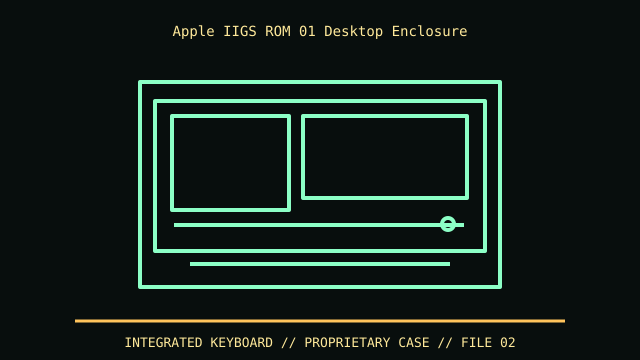

[ IDENTIFIED ENCLOSURE // APPLE IIGS ROM 01 (A2S6000, 1986) ]
Apple IIGS ROM 01 Desktop Enclosure
Low-profile keyboard-computer chassis, about 16.0 × 12.0 × 2.5 in in published equipment references; the rear expansion connector/covers need working clearance. Confirm the actual case feet and keyboard projection.

VARIANT / ARCHIVAL CAVEAT: ROM 01 and ROM 03 have board/ROM changes and different board assembly details; both are separate from the earlier IIe shell. Inspect A2S6000 label, ROM version and rear panel. Keep the metal RF shield and expansion-port cover.
Mechanical specifications and fit
| Catalog identity | Apple IIGS ROM 01 (A2S6000, 1986) |
|---|---|
| Dimensions and clearances | Low-profile keyboard-computer chassis, about 16.0 × 12.0 × 2.5 in in published equipment references; the rear expansion connector/covers need working clearance. Confirm the actual case feet and keyboard projection. |
| Drive bays / mounts | No internal standard drive bay; 3.5-inch disk drives (Apple 3.5 Drive) and power supply are external. |
| Board, system and compatibility | IIGS board has internal memory expansion and rear external expansion connector, but the case is not a PC enclosure. Power and disk connectors follow Apple IIgs peripherals. |
| Revision / identification | ROM 01 and ROM 03 have board/ROM changes and different board assembly details; both are separate from the earlier IIe shell. Inspect A2S6000 label, ROM version and rear panel. Keep the metal RF shield and expansion-port cover. |
Preservation and installation notes
ROM 01 and ROM 03 have board/ROM changes and different board assembly details; both are separate from the earlier IIe shell. Inspect A2S6000 label, ROM version and rear panel. Keep the metal RF shield and expansion-port cover.
IIGS board has internal memory expansion and rear external expansion connector, but the case is not a PC enclosure. Power and disk connectors follow Apple IIgs peripherals.
- Capture the complete model/SKU, serial/date label, board assembly and bay/backplane/riser identifiers before disassembly; keep matched screws, trays, carriers, feet and cables with the case.
- Check the cited manual's specific build option before transferring hardware. Published maximum GPU, drive, fan or radiator capacity may not be simultaneous when a removable cage or alternative riser occupies that volume.
- For rack and vintage systems, preserve the exact rails, shields, doors, brackets and model-specific safety instructions; do not infer compatibility from a familiar brand or physical connector shape.
Manufacturer manuals and archival sources
- Apple IIGS Technical Reference — Internet ArchivePrimary manufacturer or model-specific technical/manual reference used for the identification and mechanical data above.
- Apple IIGS Service Manual — archival recordSecond product manual, manufacturer resource or established technical archive; choose the exact regional SKU and revision.
When exact dimensions depend on configuration, the text says so; verify the measured specimen before making a fit or restoration decision.